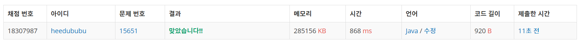

👀 문제
https://www.acmicpc.net/problem/15651
👊 도전
풀이 방법 1
1. 설계
- 1~n까지의 수 중에 m개를 고른 수열을 출력해야하므로 dfs를 이용한다.
- 중복되는 수열이 없도록, 하지만 수열안에서는 숫자가 중복되어도 되므로 visit는 필요없다.
- 시간 제한에 유의하여 Scanner 대신 BufferedReader, BufferedWriter를 이용한다.
2. 구현 (성공 코드)
1
2
3
4
5
6
7
8
9
10
11
12
13
14
15
16
17
18
19
20
21
22
23
24
25
26
27
28
29
30
31
32
33
34
35
36
37
38
39
40
41
42
43
44
45
import java.io.BufferedReader;
import java.io.BufferedWriter;
import java.io.IOException;
import java.io.InputStreamReader;
import java.io.OutputStreamWriter;
/**
*
* @author HEESOO
*
*/
public class Main {
static int[] array;
static BufferedWriter bw=new BufferedWriter(new OutputStreamWriter(System.out));
public static void dfs(int n, int m, int cnt) throws IOException{
if(cnt==m){
for(int i=0;i<m;i++){
bw.write(String.valueOf(array[i])+" ");
}
bw.newLine();
return;
}
for(int i=1;i<=n;i++){
array[cnt]=i;
dfs(n, m, cnt+1);
}
}
public static void main(String[] args) throws IOException {
BufferedReader br=new BufferedReader(new InputStreamReader(System.in));
String[] input=br.readLine().split("");
int n=Integer.parseInt(input[0]);
int m=Integer.parseInt(input[2]);
array=new int[n+1];
dfs(n, m, 0);
br.close();
bw.flush();
bw.close();
}
}
3. 결과
 🤟 성공 🤟
4. 설명
- DFS를 이용한다.
- 순열을 구하는 문제이므로 DFS를 이용한다.
- visit[]를 사용하지 않음으로써 같은 숫자도 다시 한 번 방문할 수 있게 한다.
- 출력할 숫자들을 저장하기 위해 array[]를 이용한다.
- 1부터 n까지 확인하면서 방문했다면 다음 숫자로 이동, 아니라면 방문했음을 나타내는 true를 저장한 후, array[]에 해당 숫자를 저장한다.
- 이후 다시 재귀호출하되, 숫자가 cnt+1개 사용되었으므로 이에 유의하여 파라미터를 넘겨준다.
- 사용 갯수 cnt가 m과 같아지면 저장된 array의 값들을 출력한 후, return을 통해 함수를 종료하고 재귀호출되었던 곳으로 돌아온다. 이 과정을 통해 깊이 우선 탐색(DFS)이 가능하게 된다.
- 시간 제한에 유의하여 BufferedReader, BufferedWriter를 이용한다.
- 이때 bw.flush()로 버퍼의 값을 제대로 출력할 수 있게 한다.
👏 해결 완료!
참고
- [백준,BOJ 15651] N과 M(3) (JAVA 구현) https://fbtmdwhd33.tistory.com/38
- 백준 N과M(3) 15651 java https://jsp-dev.tistory.com/entry/%EB%B0%B1%EC%A4%80-N%EA%B3%BCM3-15651-java
- 백준 15651 https://info-tech.netlify.com/posts/%EB%B0%B1%EC%A4%80-15651/